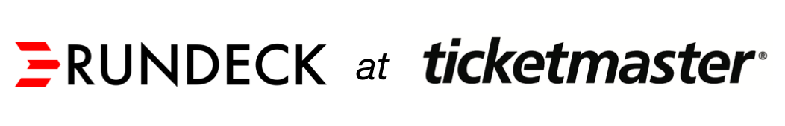
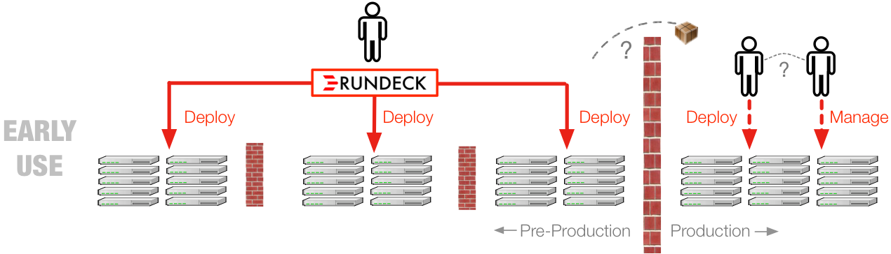
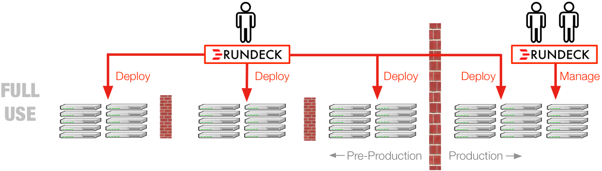
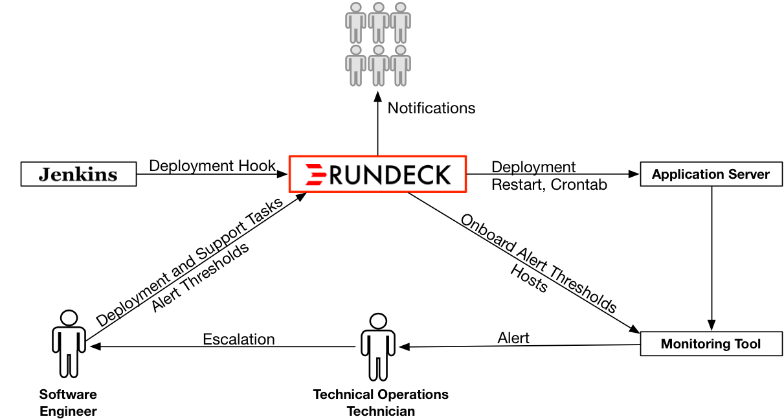

The following case study provides a glimpse into how Ticketmaster achieved these results.
Like many large enterprises, Ticketmaster’s legacy deployment process was fragmented and cumbersome. There were diverse team specific tools, too much manual intervention, and procedures varied by environment or product group. This made getting work done across teams difficult and slow. Delivery velocity for Ticketmaster’s products was suffering and mistakes were hard to avoid.
This was the situation inherited by Mark Maun, Director, Platform Engineering at Ticketmaster. Mark was challenged with the task of improving the throughput and quality of Ticketmaster’s deployment process. This appeared to be a monumental task considering that Ticketmaster is a large international organization supporting a high-profile and large-scale transaction business.

Mark Maun
Director, Platform Engineering
Rundeck was chosen by Mark to provide a consistent interface for teams across Ticketmaster to deploy and manage applications. Mark liked Rundeck’s ability to handle all of the diversity in their underlying technology as well as the multitude of automation choices that had been made independently from application-to-application and from team-to-team. Mark wanted to provide all of the benefits of standardization, but still allow each team to have the freedom to make it’s own technical choices.
“If you can script it, you can do it in Rundeck” -Mark Maun
Mark’s goal was to allow one team or an individual to drive a deployment through any/all of Ticketmaster’s environments. Mark identified that Rundeck would allow him to meet this self-service goal while also providing the access control and transparency that is needed to meet Ticketmaster’s strict security and governance policies.
Going beyond deployment, Mark saw that Rundeck would enable any operations task -- scheduled or on-demand -- to become a single button or API call that could coordinate any number of tools.
“Rundeck gives people access, but leaves ops in control of the policy” - Mark Maun
Rundeck started as part of an automation effort but soon became a key leverage point in Ticketmaster’s evolution away from it’s traditionally siloed way of working. Before Rundeck, one team would develop an application and then it could take four or more different teams to deploy that application into each successive environment (Dev, QA, Integration, Production). Furthermore, before Rundeck, there was no common place to look to understand the complete process of making a working deployment or an accessible record of what had taken place during or after a deployment. Delays and costly handoff problems were commonplace.
With Rundeck in place, individual teams could be put in control. Teams could safely deploy and manage their applications in any environment. Standardized processes could be shared or adapted between teams. Knowledge about deployment and operations activity was now readily available -- including what happened, how it happened, who did it, and when did they do it it. Handoffs were smoothed or eliminated. Delays were eliminated.
Mark initially introduced Rundeck using a grassroots approach to build support and demonstrate the benefits. As with any enterprise, Mark first needed to prove both the safety and the value of using a tool like Rundeck. Mark took on dual challenge: 1) introduce an open source tool to an organization that had previously preferred to build it’s own tools, 2) advance the idea of a “self-service” style of working.
Mark’s first target was finding development teams who would agree to use Rundeck in their pre-production environments. Early developer concerns included the loss of control over which automation they would have to use and resistance to imposed one-size-fits all standards. Mark addressed these concerns by showing how they could speed up their cycle by controlling deployments themselves and also get a safe way of handing off to each other. After those early development teams came aboard, the teams quickly saw the benefit of promoting their Rundeck usage further down the pipeline to cover QA and other pre-production environments.
With those early successes, other product teams decided to use Rundeck. Eventually, Rundeck became a default piece of the tooling supporting Ticketmaster's next generation platform. The number of teams required to deploy an application in each successive environment went from 4 down to 2 (one to deploy to pre-production and another to production). However, at this point, Ticketmaster’s Rundeck usage was limited to pre-production environments.

Despite the early success in those pre-production environments, the idea of using this solution in production was initially met with resistance. Seeing the obvious benefit of using this same method in all environments, Mark and his team set out to lessen that resistance. Logging was ramped up, Rundeck was tied into Active Directory for authentication, and an approval process was added to manage access requests.
With these additions, the compliance benefits of Rundeck soon became more obvious. Now there was one central place to review all deployment activity (previously the info had to be manually collected from multiple source).
Once Operations saw these improvements in action, they began to see that Rundeck made things easier, not more difficult.
As the successes stacked up and the operations concerns where met, the decision was made by leadership to “do it all the same” and Rundeck became a standard tool across all environments, including production.

New product teams coming to Rundeck were shown that Rundeck gave them the freedom to make the choices that best suited their applications and existing automation. Two methods for creating Jobs were provided and covered most scenarios (with Java, PHP, and Shell being the most common languages used):
Once Rundeck was in use as a method for delivery teams to push out updates, it became clear that Rundeck could also be the tool of choice for support and operations actions.
Rundeck usage evolved to become the standard flexible tool used across delivery, support, and operations teams. Rundeck also became a common point to control access policies and ensure governance.
Delivery teams now had the ability to specify, in the form of Rundeck Jobs, how to control the things they had deployed and make those controls available to whomever needs them. In addition to the improved collaboration with the Development organization, Operations now had a standard way to manage administrative tasks like service restarts, clean-up actions (getting space back), booting VMs, cron jobs, etc.
The most striking benefit was when Rundeck usage was extended to Ticketmaster’s TOC (Technical Operations Center) group under an initiative called “Support at the Edge”.
“TOC can now take action themselves using Rundeck Jobs vetted by the delivery teams. This cut down on escalations and reduced MTTR ” - Mark Maun
TOC is the support function that is responsible for the round the clock monitoring and operations of all Ticketmaster services. In the past, most of the alerts received by TOC would result in escalations. TOC had the general knowledge of the system but lacked the ability in most cases to take further exploratory or remediation actions. The number of escalations was high and Mean Time To Resolve (MTTR) was high. This condition was expensive and interfered with customers’ enjoyment of Ticketmaster’s services, both things that hurt Ticketmaster’s bottom-line.
Introduced under the leadership of Ticketmaster's new CTO, Jody Mulkey, Support at the Edge is a program designed to empower TOC to take quick and decisive action to resolve production issues. Using Rundeck Jobs, a Delivery team would provide TOC users with a set of standard operating procedures to manage the applications running in production. By tying monitoring alerts to specific Rundeck Jobs, it became simple to take quick action and fix known issues as soon as they occur.
This Support at the Edge initiative showed quick results in a matter of months. MTTR per application dropped by 50% - 150%. The number of incidents per application that needed to be escalated were reduced by 30% - 40% and the overall cost of support incidents was reduce by 55%.
Using Rundeck as part of the Support at the Edge initiative had other benefits as well. Rundeck became a bridge through which actionable information can be shared between TOC and the delivery teams. Rundeck Jobs are used to communicate specific procedures to TOC users and Rundeck reports are used to communicate recent TOC activity back to the delivery teams.
